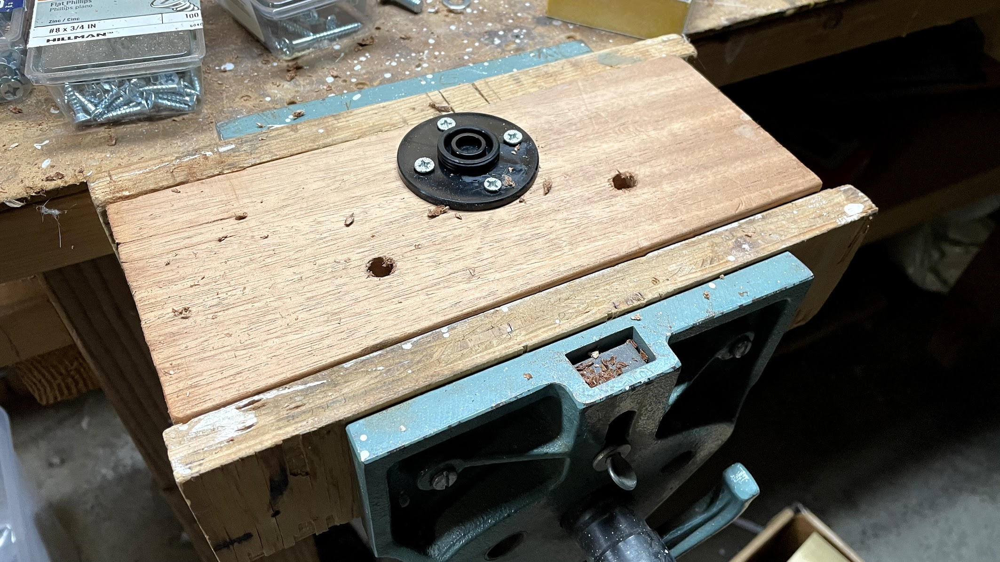
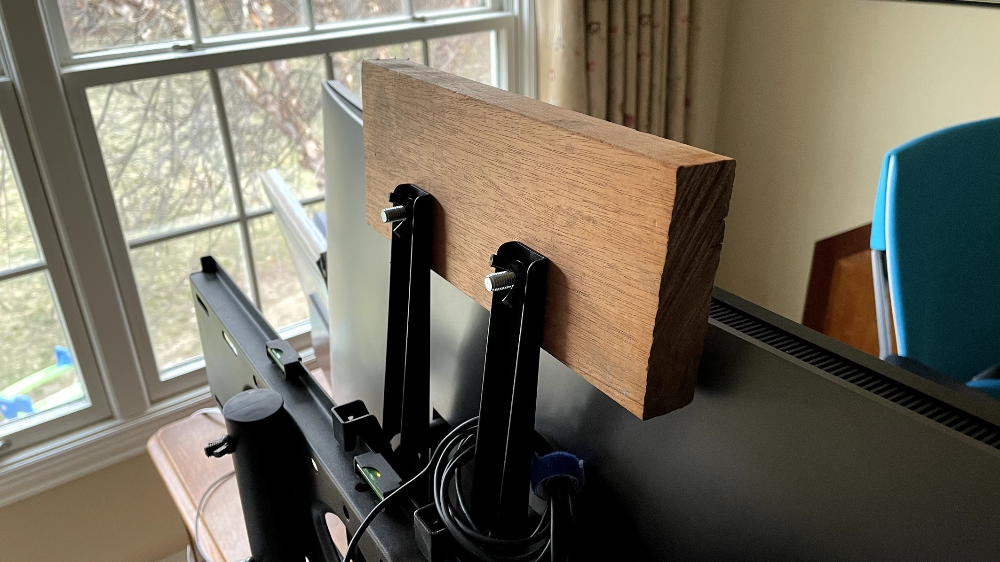
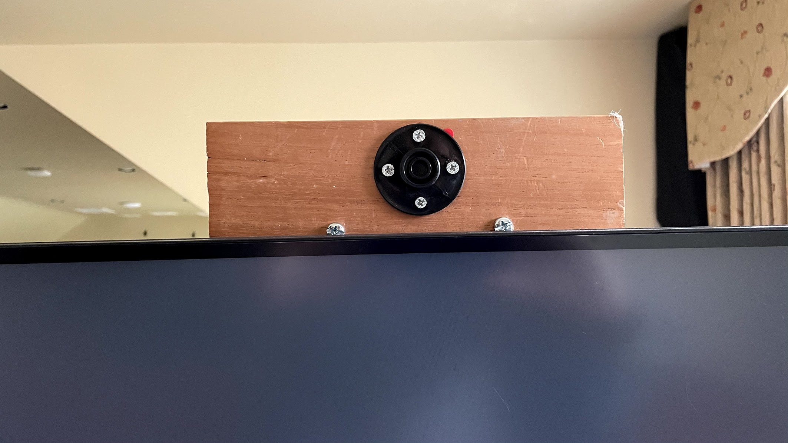
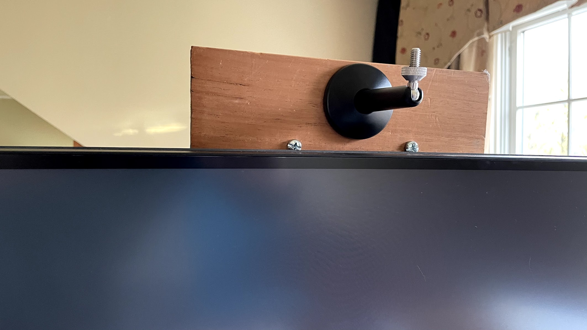
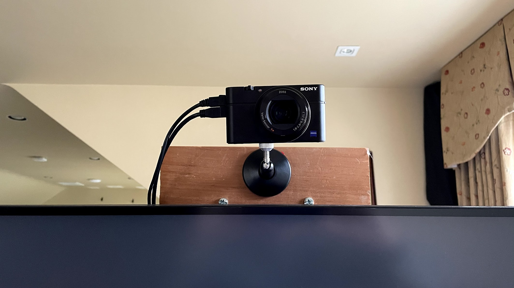
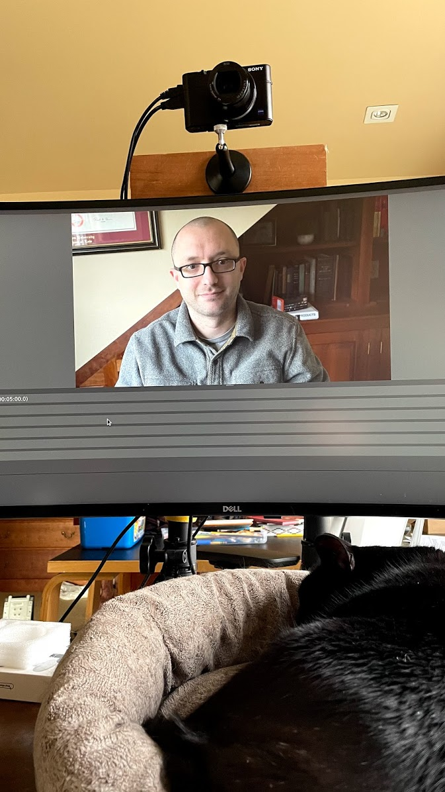

Earlier this month I decided to use some of my company’s generous home office reimbursement to test out the “use a real digital camera as a webcam” craze that’s been going around. I spend most of my day on Zoom meetings with colleagues and other people around the industry, so I figured it wouldn’t be the worst use of money — especially if it noticeably increased the quality of the video feed that I’m sending out into the world.
To raise the level of difficulty, my primary machine is a beefy Linux workstation. And as we all know, Linux is well-known for being straightforward and easy to configure… 🙄
In the end, I decided to return the camera and stick with my battle-tested, traditional Logitech C920 webcam. But in case others are interested in getting this setup working under Linux, here are my notes!
There are any number of overview posts out on the Web. Very briefly, the “traditional” approach to using a digital camera as a webcam requires:
But, you can’t just use any camera. In particular, you need one that can output “clean HDMI”. This means that the camera has an HDMI output; can send a live view of what its CCD is seeing to that HDMI output; and that it can send only the live CCD feed, without any additional menus or UI elements like you’d see in the viewfinder. Atomos has a good website listing a wide variety of cameras that qualify.
With these two devices, your computer can “receive” the video feed from the camera. Plug your camera’s clean HDMI output into this capture card, and voilà! You have a very overpowered webcam.
Several camera manufacturers have started providing updated drivers that let you plug the camera directly into your machine via its USB cable, and have it appear as a webcam. I haven’t seen any of these drivers available for Linux yet, though, so I haven’t attempted it. You can probably rig something up using gphoto2 and ffmpeg, but I was looking for something more turnkey. (Yes, “turnkey” and “on Linux”. Stop snickering.)
Now, most of the posts you’ll find out there right now focus on getting all of this working with a Mac or Windows machine. Knowing how Linux can be…finicky, I tried to find out which capture cards other folks have had success getting to work under Linux. For instance, Elgato seems to be the consensus pick for the best capture card, but its Linux support is iffy at best. (I’m old. I don’t have the patience anymore to delve through various forum posts looking for magic incantations and alpha-quality drivers in sketchy GitHub repos.)
Magewell, on the other hand, explicitly supports Linux, and provides their own drivers! Miracle of miracles. And best of all, on my preferred distro (Arch), the drivers are available in the AUR supplementary package repository! Install this driver, and your HDMI capture card should appear as a video4linux2 device like any other webcam.
So, given the above, I went with:
Note that I went with the Mk IV, even though this model is already up to the Mk VII! The later revisions were much more expensive, and the Mk IV seems to provide the best balance of features vs price from what I could find on Amazon.
Having carefully chosen the hardware, the software installation turned out to be simple! I use Arch Linux; Magewell’s drivers are available in the AUR; and I use Rua as my AUR helper. That means that the entirety of the installation and setup process was:
$ sudo pacman -S linux-headers $ rua install magewell-pro-capture-dkms
(The first step wouldn’t normally be necessary, but the AUR package doesn’t currently list ‘linux-headers’ as a dependency like it should.)
With the software setup being anticlimactic, the next step was to figure out how to mount the camera in a useful location. I guess that’s one more item for the hardware list:
Luckily, I had a nice piece of scrap wood exactly the right size down in the basement. First, I attached the base of the camera mount to the scrap wood, and drilled some holes:

so that I could then attach the scrap wood to my monitor’s mounting bracket:


Then attach the camera mount to its base:

Lastly, mount the camera and plug it in!

And to prove it works, a mug shot captured in OBS using the new “webcam”:

All in all, not that bad! Not nearly as difficult of a project as I was expecting. I was able to get all of this set up over a weekend and took all of my Zoom calls for a day using the new camera setup.
In the end, though, I decided it wasn’t enough of a win to justify the cost. The picture quality was a better, but not so much better that it was game-changing. I do think that I could’ve invested more time in tweaking the camera settings to get the perfect picture — but on the other hand, I’m not really looking for a new time-intensive hobby! I have plenty of those already. And I wouldn’t have used this camera for any intense YouTube or Twitch streaming — my requirements are squarely focused on video calls in Zoom. (During these days of increased demand because of the pandemic, Zoom will typically downsample your video feed!)
So I’ve returned the camera and gotten a refund. I kept the HDMI capture card, because I think it might still be useful for screen-sharing from my iPad while still “controlling” a Zoom call from my Linux desktop. The experiment was a minor success in that I felt good about getting it to work, and enjoyed that I was able to mount it to my monitor stand with stuff I already had in the basement. But for the actual video feed, my Logitech webcam is perfectly fine.